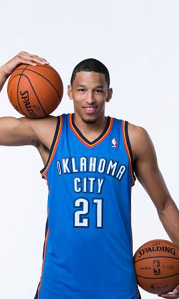

|  |
Матчи |
67 |
|
Передачи (всего/среднее) |
70 |
1 |
| В основе |
65 |
|
Подборы в защите (всего/среднее) |
195 |
2.9 |
| Время (всего/среднее) |
1286:06 |
19:12 |
Подборы в атаке (всего/среднее) |
60 |
0.9 |
| Очки (всего/среднее) |
228 |
3.4 |
Подборы (всего/среднее) |
255 |
3.8 |
| 2-очковые броски (всего/среднее) |
71/116 |
1.1/1.7 |
Перехваты (всего/среднее) |
53 |
0.8 |
| 2-очковые броски (% реализации) |
61.2% |
|
Потери (всего/среднее) |
46 |
0.7 |
| 3-очковые броски (всего/среднее) |
21/85 |
0.3/1.3 |
Блокшоты (всего/среднее) |
29 |
0.4 |
| 3-очковые броски (% реализации) |
24.7% |
|
Блокшоты соперника (всего/среднее) |
18 |
0.3 |
| Штрафные броски (всего/среднее) |
23/48 |
0.3/0.7 |
Фолы (всего/среднее) |
141 |
2.1 |
| Андре Роберсон |
Штрафные броски (% реализации) |
47.9% |
|
Коэффициент полезности (всего/среднее) |
296 |
4.4 |